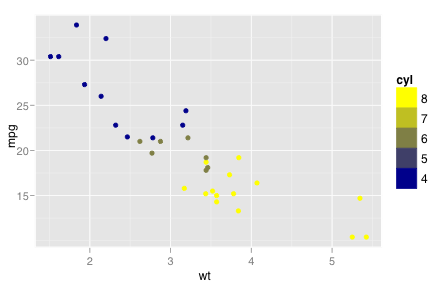
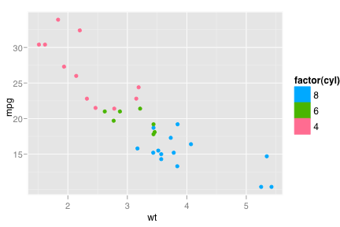
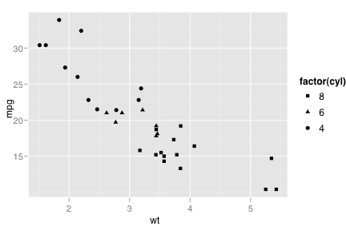
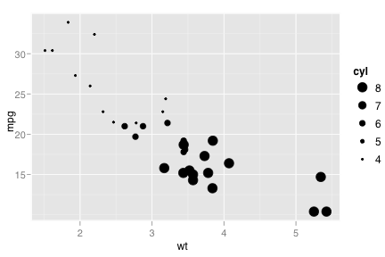
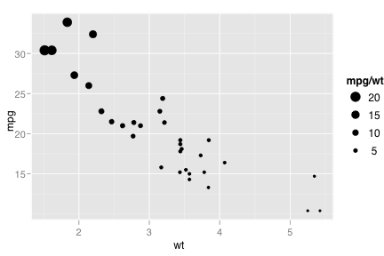
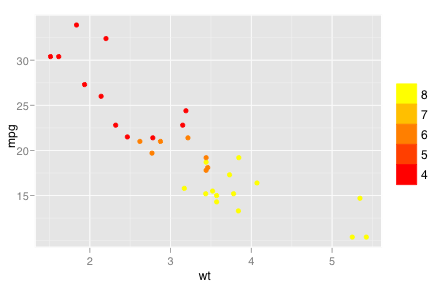
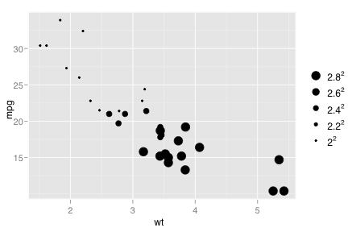
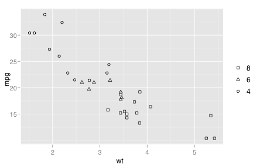
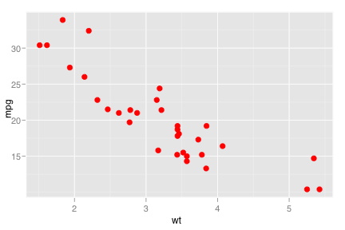
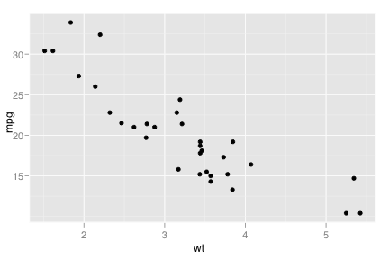

geom_point
Points, as for a scatterplot
Details
The point geom is used to create scatterplots
The scatterplot is useful for displaying the relationship between two continuous variables, although it can also be used with one continuous and one categorical variable, or two categorical variables. See geom_jitter for possibilities
The bubblechart is a scatterplot with a third variable mapped to the size of points. There are no special names for scatterplots where another variable is mapped to point shape or colour, however
The biggest potential problem with a scatterplot is overplotting: whenever you have more than a few points, points may be plotted on top of one another. This can majorly distort the visual appearance of the plot. There is no one solution to this problem, but there are some techniques that can help. You can add additional information with stat_smooth, stat_quantile or stat_density2d. If you have few unique x values, geom_boxplot may also be useful. Alternatively, you can summarise the number of points at each location and display that in some way, using stat_sum. Another technique is to use transparent points, geom_point(colour=alpha('black', 0.05))
See layer and qplot for more information on creating a complete plot from multiple components.
Aesthetics
The following aesthetics can be used with geom_point. They are listed along with their default value. All geoms and scales can also use the group aesthetic. Read how this important aesthetic works in scale_group. Typically, you will associate an aesthetic with a variable in your data set. To do this, you use the aes function: geom_point(aes(x = var)). Scales control the details of the mapping between data and aesthetic properties; after each aesthetic are listed scales that can be used with that aesthetic. The scale documentation will also provide references to help you interpret the default values.
Instead of mapping an aesthetic to a variable in your dataset, you can also set it to a fixed value. See the parameters section for details.
colour:
black(scales: brewer, gradient, gradient2, hue, manual)size:
2(scales: area, manual, size, size_discrete)
Parameters
When an aesthetic is used an a parameter, like geom_point(shape = 3), it will override mappings from data.
shape, shape of pointcolour, border coloursize, size
Default statistic
stat_identity. Override with the stat argument: geom_point(stat="identity")
Default position
position_identity. Override with the position argument: geom_point(position="jitter").
See also
- scale for continuous variable'>scale_area: Scale area of points, instead of radius
- geom_jitter: Jittered points for categorical data
Examples
> p <- ggplot(mtcars, aes(x=wt, y=mpg)) > p + geom_point()> > # Add aesthetic mappings > p + geom_point(aes(colour=cyl))  > p + geom_point(aes(colour=factor(cyl)))  > p + geom_point(aes(shape=factor(cyl)))  > p + geom_point(aes(size=cyl))  > p + geom_point(aes(size=mpg/wt))  > > # Change scales > p + geom_point(aes(colour=cyl)) + scale_colour_gradient(low="red")  > p + geom_point(aes(size=cyl)) + scale for continuous variable'>scale_area()  > p + geom_point(aes(shape=factor(cyl))) + position scale'>scale_shape(solid=FALSE)  > > # Set aesthetics to fixed value > p + geom_point(colour = "red", size=3)  > > # Use qplot instead > qplot(x=wt, y=mpg, data=mtcars)  > qplot(x=wt, y=mpg, data=mtcars, geom="point")